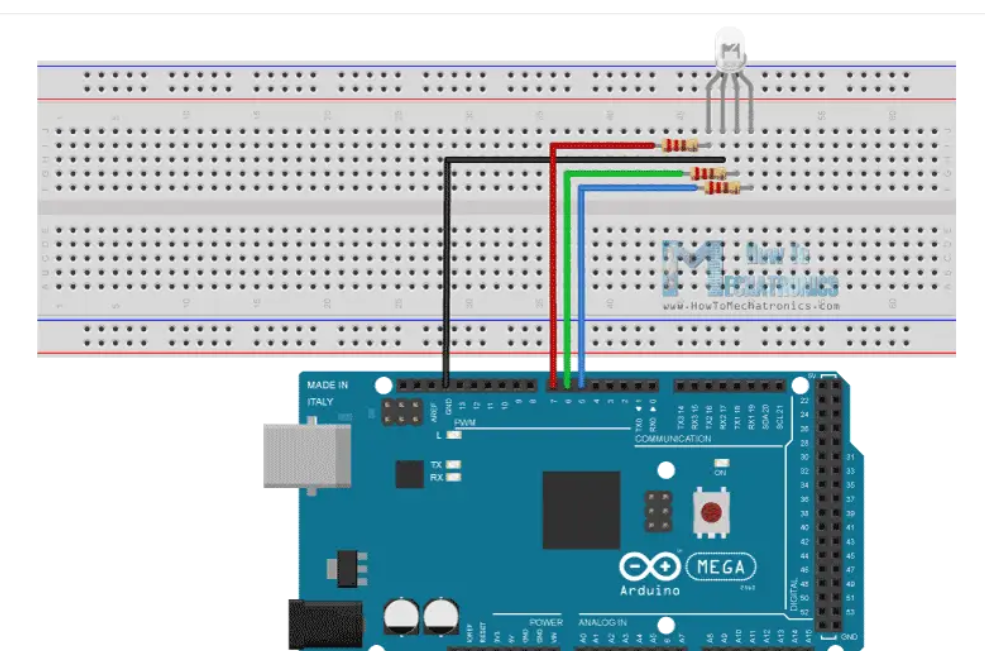

<br>
#### Week 7: Output Devices
<i> Assignment:
Use an output device that you haven't used before today.
Write a microcontroller program that integrates at least one input device and one output device. Avoid the delay() function and use the C++ class structure.
Use an oscilloscope to discover the time domain at which your output device is operating. Is it on a fixed clock? What's its speed? Share images and describe your findings.
Prepare CAD files for CNC (next class). Consider either 2D DXF files for routing sheet material (like plywood or OSB), or 3D STL files to mill out a (2.5D) shape. We will also cover molding & casting, so you may want to consider milling a mold. </i>
And here is a <a href="https://nathanmelenbrink.github.io/intro-dig-fab/08_output/index.html">Link to the original assignment page</a>
<p>This week, I first used OLED in class and I also had fun with the RGB Led.For my input/output assigment, I used Piezo discs and LCD display.</p>
<h2>OLED</h2>
<p> I followed the tutorial to wire the OLED display to my Arduino and to download the library required. I started to use a code example from Adafruit which looked very nice.</p>
<p> After that, I played a bit withe OLED printing some text, drawing circles, squares etc..</p>
<h2> RGB LED</h2>
<p>Let's talk about the RGB LED. Here's a circuit diagram.I used 220 Ohms resistors.</p>

<p>First, I used the code given in the course.</p>
<pre id="arduino-code">
<code class="language-arduino">
void setup() {
pinMode(9, OUTPUT); // red
pinMode(10, OUTPUT); // green
pinMode(11, OUTPUT); // blue
}
void loop() {
digitalWrite(9, HIGH); // turn on red channel
delay(500); // delay
digitalWrite(10, HIGH); // turn on green channel
delay(500); // delay
digitalWrite(11, HIGH); // turn on green channel
delay(500); // delay
digitalWrite(9, LOW); // turn off red channel
digitalWrite(10, LOW); // turn off green channel
digitalWrite(11, LOW); // turn off blue channel
delay(3000); // delay
}
</code>
</pre>
<video width="600" height="400" controls autoplay>
<source src="RGBledessai1.mp4" type=video/mp4>
</video>
<p>The next step was to try to control each color channel independently but first I wanted to see a color gradient on my led. I used this code for this.</p>
<pre>
<code class="language-arduino">
// Pin definitions
const int redPin = 9;
const int greenPin = 10;
const int bluePin = 11;
void setup() {
// Configure pins as output
pinMode(redPin, OUTPUT);
pinMode(greenPin, OUTPUT);
pinMode(bluePin, OUTPUT);
}
void loop() {
// Variation of color components
for (int i = 0; i < 256; i++) {
// Red component
analogWrite(redPin, i);
delay(5);
// Green component
analogWrite(greenPin, 255 - i);
delay(5);
// Blue component
analogWrite(bluePin, 0);
delay(5);
}
for (int i = 0; i < 256; i++) {
// Red component
analogWrite(redPin, 255 - i);
delay(5);
// Green component
analogWrite(greenPin, 0);
delay(5);
// Blue component
analogWrite(bluePin, i);
delay(5);
}
for (int i = 0; i < 256; i++) {
// Red component
analogWrite(redPin, 0);
delay(5);
// Green component
analogWrite(greenPin, i);
delay(5);
// Blue component
analogWrite(bluePin, 255 - i);
delay(5);
}
}
</code>
</pre>
<video width="600" height="400" controls autoplay>
<source src="RGBledgradient.mp4" type=video/mp4>
</video>
<p>Finally, to be able to control each color channel independently, I used potentiometers and PWM.
<img src="schemacircuitledRGB2.png" alt="Image" style="width:600px;height:400px;"/>
<pre>
<code class="language-arduino">
int RGBLED_RedPin = 9;
int RGBLED_GreenPin = 10;
int RGBLED_BluePin = 11;
int Previous_PWMValue_RedPin = 0;
int Threshold_PWMValue_RedPin = 0;
int Previous_PWMValue_GreenPin = 0;
int Threshold_PWMValue_GreenPin = 0;
int Previous_PWMValue_BluePin = 0;
int Threshold_PWMValue_BluePin = 0;
void setup()
{
Serial.begin(9600); // initialize serial communications at 9600 bps
pinMode(RGBLED_RedPin, OUTPUT);
pinMode(RGBLED_GreenPin, OUTPUT);
pinMode(RGBLED_BluePin, OUTPUT);
}
void loop()
{
int Pot_RedPin = analogRead(A0);
int PWMValue_RedPin = Pot_RedPin / 4;
int Pot_GreenPin = analogRead(A1);
int PWMValue_GreenPin = Pot_GreenPin / 4;
int Pot_BluePin = analogRead(A2);
int PWMValue_BluePin = Pot_BluePin / 4;
analogWrite(RGBLED_RedPin, PWMValue_RedPin);
analogWrite(RGBLED_GreenPin, PWMValue_GreenPin);
analogWrite(RGBLED_BluePin, PWMValue_BluePin);
Threshold_PWMValue_RedPin = abs(Pot_RedPin - Previous_PWMValue_RedPin);
Threshold_PWMValue_GreenPin = abs(Pot_GreenPin - Previous_PWMValue_GreenPin);
Threshold_PWMValue_BluePin = abs(Pot_BluePin - Previous_PWMValue_BluePin);
if (Threshold_PWMValue_RedPin >= 10 || Threshold_PWMValue_GreenPin >= 10 || Threshold_PWMValue_BluePin >= 10)
{
Serial.print("RGB (");
Serial.print(PWMValue_RedPin);
Serial.print(", ");
Serial.print(PWMValue_GreenPin);
Serial.print(", ");
Serial.print(PWMValue_BluePin);
Serial.println(") ");
}
Previous_PWMValue_RedPin = Pot_RedPin;
Previous_PWMValue_GreenPin = Pot_GreenPin;
Previous_PWMValue_BluePin = Pot_BluePin;
delay(2);
}
</code>
</pre>
<video width="300" height="500" controls autoplay>
<source src="RGBledpotentiometre.mp4" type=video/mp4>
</video>
<p>we can't see much on the video unfortunately.</p>
<h2> Input/Output device </h2>
<p> I took the opportunity to work on my final project.</p>
<p> For my final project, I need to have piezo discs as an input and LCD screens as outputs.</p>
<p> I worked a lot on the code so it is almost done. You can see all my journey in the "final project" tab on my website.</p>
<p> My problem now is that my code is not using OOP and still has delays so I need to work on that.</p>
<p> I managed to do everything I wanted to do you can get an example below.</p>
<video width="400" height="600" controls autoplay>
<source src="codeprojetfinalparfait.mp4" type=video/mp4>
</video>
<p> However, because we need to have a code with classes and no delays for this assigment and because it will take me time to do this for my final project I decided to use an intermediate code for this assigment.</p>
<p> This code allows to display the total inserted in the piggy bank on an LCD screen.</p>
<p> Here is a video and the code with delays.</p>
<pre>
<code class="language-arduino">
#include "LiquidCrystal_I2C.h"
LiquidCrystal_I2C lcd(0x27, 16, 2);
const int capteur1Pin = A0; // Sensor 1, A4 pin
const int capteur2Pin = A1; // Sensor 2, A2 pin
const int capteur3Pin = A2; // Sensor 3, A0 pin
const int capteur4Pin = A3; // Sensor 4, A3 pin
const int capteur5Pin = 9; // Sensor 5, A5 pin
int total1 = 0; // Total for sensor 1 (10 cents)
int total2 = 0; // Total for sensor 2 (1 cent)
int total3 = 0; // Total for sensor 3 (5 cents)
int total4 = 0; // Total for sensor 4 (25 cents)
int total5 = 0; // Total for sensor 5 (1 dollar)
float totalGlobal = 0.0; // Overall total
void setup() {
pinMode(capteur1Pin, INPUT); // Set sensor1Pin as input
pinMode(capteur2Pin, INPUT); // Set sensor2Pin as input
pinMode(capteur3Pin, INPUT); // Set sensor3Pin as input
pinMode(capteur4Pin, INPUT); // Set sensor4Pin as input
pinMode(capteur5Pin, INPUT); // Set sensor5Pin as input
lcd.init(); // Initialize the I2C LCD screen
lcd.backlight(); // Turn on the I2C LCD backlight
Serial.begin(9600); // Initialize serial communication at 9600 baud
}
void loop() {
if (digitalRead(capteur1Pin) == HIGH) {
total1 += 10;
totalGlobal += 0.10;
Serial.print("Total 1: $");
Serial.print(total1 / 100.0, 2);
Serial.print(" (");
Serial.print(total1 / 10);
Serial.print(" coins)");
Serial.println();
Serial.print("Overall Total: $");
Serial.print(totalGlobal, 2);
Serial.println();
updateLCD();
delay(500); // Wait for 500 milliseconds to debounce
}
if (digitalRead(capteur2Pin) == HIGH) {
total2 += 1;
totalGlobal += 0.01;
Serial.print("Total 2: $");
Serial.print(total2 / 100.0, 2);
Serial.print(" (");
Serial.print(total2);
Serial.print(" coins)");
Serial.println();
Serial.print("Overall Total: $");
Serial.print(totalGlobal, 2);
Serial.println();
updateLCD();
delay(500); // Wait for 500 milliseconds to debounce
}
if (digitalRead(capteur3Pin) == HIGH) {
total3 += 5;
totalGlobal += 0.05;
Serial.print("Total 3: $");
Serial.print(total3 / 100.0, 2);
Serial.print(" (");
Serial.print(total3 / 5);
Serial.print(" coins)");
Serial.println();
Serial.print("Overall Total: $");
Serial.print(totalGlobal, 2);
Serial.println();
updateLCD();
delay(500); // Wait for 500 milliseconds to debounce
}
if (digitalRead(capteur4Pin) == HIGH) {
total4 += 25;
totalGlobal += 0.25;
Serial.print("Total 4: $");
Serial.print(total4 / 100.0, 2);
Serial.print(" (");
Serial.print(total4 / 25);
Serial.print(" coins)");
Serial.println();
Serial.print("Overall Total: $");
Serial.print(totalGlobal, 2);
Serial.println();
updateLCD();
delay(500); // Wait for 500 milliseconds to debounce
}
if (digitalRead(capteur5Pin) == HIGH) {
total5 += 100;
totalGlobal += 1.0;
Serial.print("Total 5: $");
Serial.print(total5 / 100.0, 2);
Serial.print(" (");
Serial.print(total5 / 100);
Serial.print(" coins)");
Serial.println();
Serial.print("Overall Total: $");
Serial.print(totalGlobal, 2);
Serial.println();
updateLCD();
delay(500); // Wait for 500 milliseconds to debounce
}
}
void updateLCD() {
lcd.clear(); // Clear the I2C LCD screen
lcd.setCursor(5, 0); // Set the cursor to column 0, line 0
lcd.print("Total:");
lcd.setCursor(4, 1); // Set the cursor to column 0, line 1
lcd.print("$");
int cents = static_cast<int>(totalGlobal * 100); // Convert the total to cents as an integer
lcd.print(cents / 100); // Display the dollar part of the total
lcd.print(".");
if ((cents % 100) < 10) {
lcd.print("0");
}
lcd.print(cents % 100); // Display the cents part of the total
}
void printAmount(int amount) {
Serial.print("$");
Serial.print(amount / 100);
Serial.print(".");
if ((amount % 100) < 10) {
Serial.print("0");
}
Serial.print(amount % 100);
}
</code>
</pre>
<video width="600" height="400" controls autoplay>
<source src="codeparfait1enaction.mp4" type=video/mp4>
</video>
<p>I modified the code so that I would be cleaner with classes...</p>
<p> It took me quite some time so I hope I will be able to get a clean code for my final project final code.</p>
<h3> Important code </h3>
<pre>
<code class="language-arduino">
#include "LiquidCrystal_I2C.h" // Include the library for I2C LCD
LiquidCrystal_I2C lcd(0x27, 16, 2); // Create an instance of the LiquidCrystal_I2C class
enum SensorPin {
CAPTEUR_1 = A0, // Analog pin A0
CAPTEUR_2 = A1, // Analog pin A1
CAPTEUR_3 = A2, // Analog pin A2
CAPTEUR_4 = A3, // Analog pin A3
CAPTEUR_5 = 9 // Digital pin 9
};
void updateLCD(); // Function declaration
class CoinCounter {
private:
SensorPin pin; // Sensor pin
int value; // Number of coins detected
int total; // Total value in cents
static float totalGlobal; // Total value globally in dollars
public:
CoinCounter(SensorPin pin) : pin(pin), value(0), total(0) {} // Constructor
void init() {
pinMode(pin, INPUT); // Set the pin mode as INPUT
}
void update() {
static unsigned long lastDebounceTime = 0; // Last debounce time
unsigned long currentTime = millis(); // Current time
const unsigned long debounceDelay = 500; // Debounce delay in milliseconds
// Check if the pin is HIGH and debounce time has passed
if (digitalRead(pin) == HIGH && (currentTime - lastDebounceTime) >= debounceDelay) {
value++; // Increment the number of coins detected
total += getValueInCents(); // Add the value of the coin in cents to the total
totalGlobal += getValueInDollars(); // Add the value of the coin in dollars to the global total
printTotal(); // Print the current and overall totals
updateLCD(); // Update the LCD display
lastDebounceTime = currentTime; // Update the last debounce time
}
}
int getValue() const {
return value; // Return the number of coins detected
}
int getTotal() const {
return total; // Return the total value in cents
}
static float getTotalGlobal() {
return totalGlobal; // Return the global total value in dollars
}
private:
int getValueInCents() const {
// Return the value of the coin in cents based on the sensor pin
switch (pin) {
case CAPTEUR_1:
return 10;
case CAPTEUR_2:
return 1;
case CAPTEUR_3:
return 5;
case CAPTEUR_4:
return 25;
case CAPTEUR_5:
return 100;
default:
return 0;
}
}
float getValueInDollars() const {
return getValueInCents() / 100.0; // Return the value of the coin in dollars
}
void printTotal() const {
// Print the current total for the sensor pin and the overall total
Serial.print("Total ");
Serial.print(pinToSensorName(pin));
Serial.print(": $");
Serial.print(total / 100.0, 2); // Print the total value in dollars with 2 decimal places
Serial.print(" (");
Serial.print(value);
Serial.print(" coins)");
Serial.println();
Serial.print("Overall Total: $");
Serial.print(totalGlobal, 2); // Print the overall total value in dollars with 2 decimal places
Serial.println();
}
String pinToSensorName(SensorPin pin) const {
// Convert the sensor pin to a corresponding sensor name
switch (pin) {
case CAPTEUR_1:
return "1";
case CAPTEUR_2:
return "2";
case CAPTEUR_3:
return "3";
case CAPTEUR_4:
return "4";
case CAPTEUR_5:
return "5";
default:
return "";
}
}
};
float CoinCounter::totalGlobal = 0.0; // Initialize the static member variable
CoinCounter sensors[] = {
CoinCounter(CAPTEUR_1), // Create instances of CoinCounter for each sensor pin
CoinCounter(CAPTEUR_2),
CoinCounter(CAPTEUR_3),
CoinCounter(CAPTEUR_4),
CoinCounter(CAPTEUR_5)
};
void setup() {
lcd.init(); // Initialize the LCD
lcd.backlight(); // Turn on the LCD backlight
Serial.begin(9600); // Initialize the Serial communication
for (int i = 0; i < 5; i++) {
sensors[i].init(); // Initialize each CoinCounter instance
}
}
void loop() {
for (int i = 0; i < 5; i++) {
sensors[i].update(); // Update each CoinCounter instance
}
}
void updateLCD() {
lcd.clear(); // Clear the LCD display
lcd.setCursor(5, 0); // Set the cursor position
lcd.print("Total:"); // Print "Total:" on the first line
lcd.setCursor(4, 1); // Set the cursor position
lcd.print("$"); // Print "$" on the second line
lcd.print(CoinCounter::getTotalGlobal(), 2); // Print the overall total value in dollars with 2 decimal places
}
</code>
</pre>
<h2>Oscilloscope</h2>
<p> The last part of the assigment was to use an oscilloscope.</p>